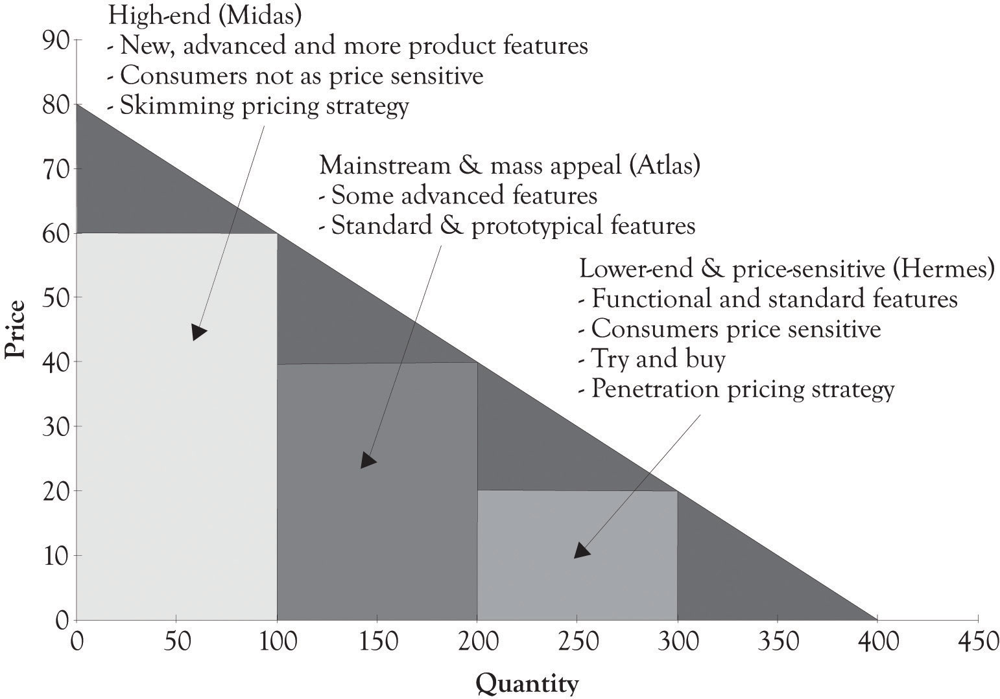
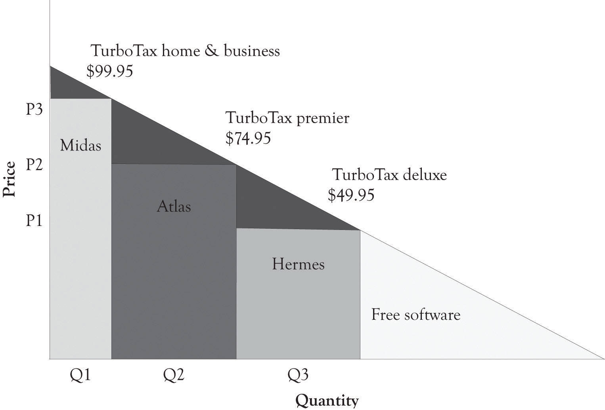

The three categories for product versioning and experimentation are the high-end or Midas product, the mass-appeal or Atlas product, and the low-end or Hermes product (see Figure 4.3 "Midas, Atlas, and Hermes Characteristics"). We will often use the terms version and product interchangeably; however, a version is usually related to a particular product. The Midas product is targeted toward the consumer who is not price-sensitive and is interested in many different features. Midas products might have an extended warranty or may be bundled with other products and services. Examples of Midas products include Cadillac, Acura, Lexus, TurboTax Premier, and specialized boutique stores. Sometimes, a Midas version is not even different than the Atlas version of a product or even the Hermes version of a product. Marketing efforts via branding may have infused the notion that the product is better than another product with the same features. This happens in the commodities markets, the car-rental business, and in electronics markets where standardized products such as CDs and DVDs are being sold.
Figure 4.3 Midas, Atlas, and Hermes Characteristics
Mass-appeal or Atlas products and services are developed to appeal to a large percentage of consumers. Mass-appeal products and services will contain elements of what is essentially a prototypical product. A prototypical productThe archetype product that other products are patterned after. is the archetype product that other products are patterned after. In order for this product to appeal to the masses, it usually has a minimal set of standard features. In order to distinguish a prototypical product from the competition, there will also be a few features that are differentiators or there will be standard features that have been enhanced or amped up a bit to discern the product from other mass-appeal products. Examples of mass-appeal products include the Camry, the Accord, the Malibu, and TurboTax Deluxe. Examples of mass-appeal retail outlets include Sears, Safeway, and Amazon.
Low-end or Hermes products and services are designed for markets where the consumers are price-sensitive. These products have the essence of the prototypical product, but they are scaled back in order to meet the price sensitivities of this segment. These groups could include students, seniors, and, in general, individuals with low levels of discretionary income or even individuals who are value-conscious. Examples of products and services designed for the Hermes customers include TurboTax Free Edition, the Honda Fit and Tata Nano, and many of the large lot stores such as Sam’s Club, BJ’s, and Costco. Figure 4.4 "TurboTax Versioning" presents the all-to-familiar price and product versioning that is used by Intuit for TurboTax.
Figure 4.4 TurboTax Versioning
